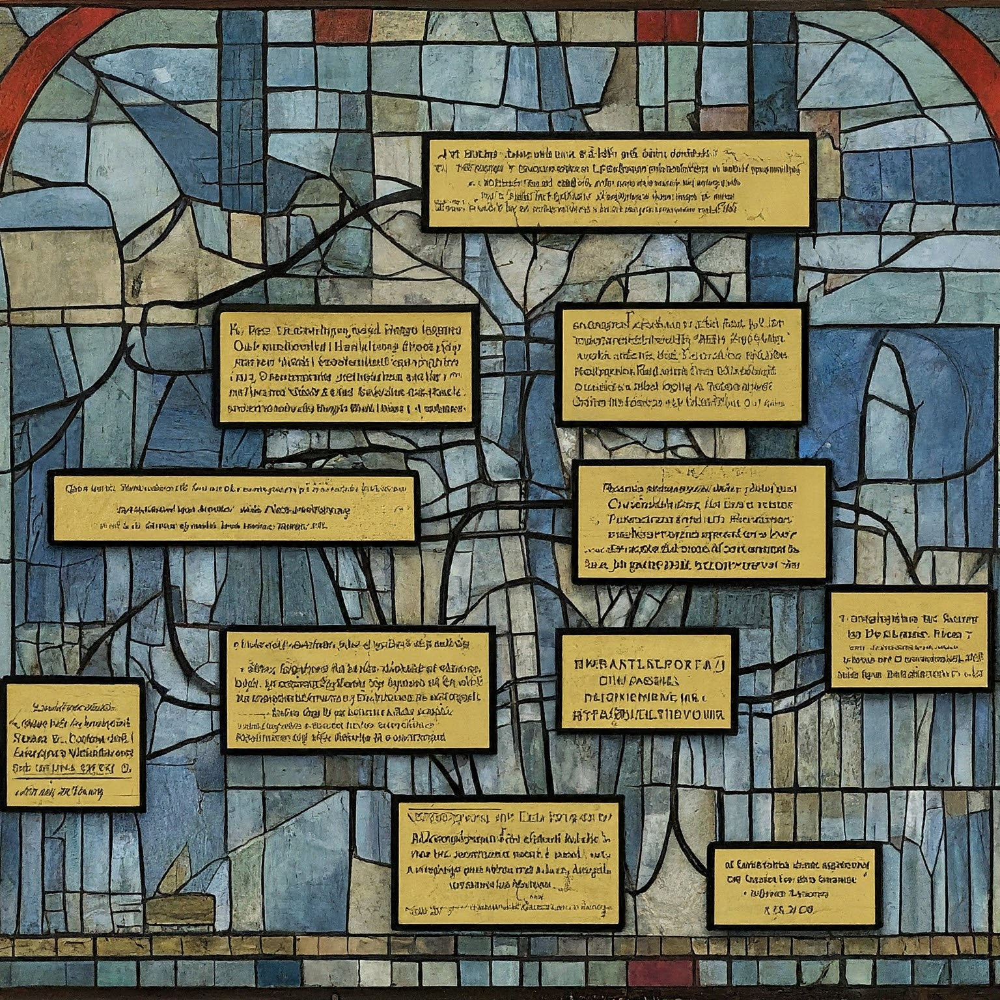

ABOUT ME
Just completed a DA course by John Bryce, equipping me with the skills to wrangle, analyze, and visualize data using SQL,
Pandas, Excel, and Power BI. Check out my portfolio for examples of how I've applied these tools to some projects :))

This self-built sample relational database stores and links details about biblical figures – names, titles, relationships, events, locations – all anchored to specific verses.
This project delves into ten diverse business scenarios, utilizing SQL to unlock valuable insights. It showcases the power of SQL in extracting intelligence and solving business challenges.
This project analyzes historical food price trends in Israel using data from the Israel Central Bureau of Statistics. The data is loaded into a Pandas DataFrame for comprehensive processing and analysis.
This project utilizes Microsoft Power BI to create a comprehensive data analysis dashboard for the classic Northwind sample database.